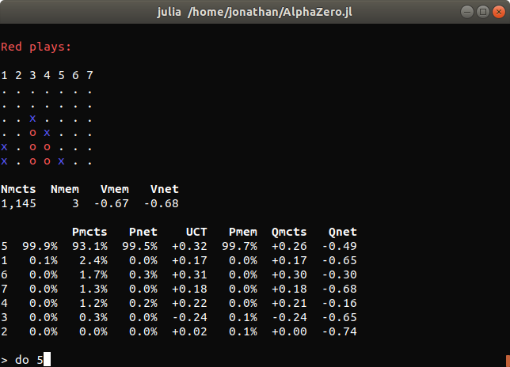
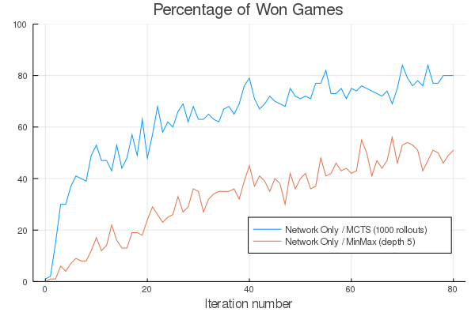
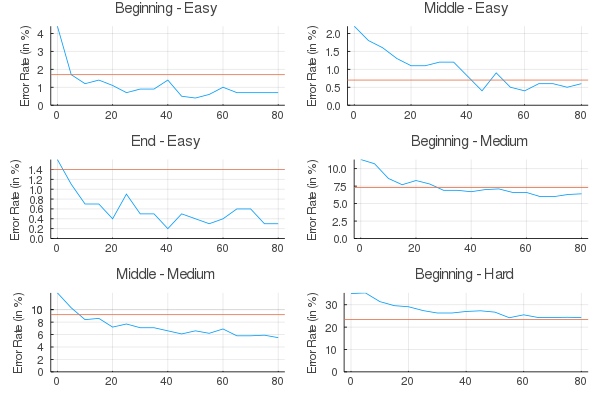

Training a Connect Four Agent
In this tutorial, we demonstrate AlphaZero.jl by training a Connect Four agent without any form of supervision or prior knowledge. Although the game has been solved exactly with Alpha-beta pruning using domain-specific heuristics and optimizations, it is still a great challenge for reinforcement learning.[1]
Setup and Training
To run the experiments in this tutorial, we recommend having a CUDA compatible GPU with 4GB of memory or more. A 2GB GPU should work fine but you may have to reduce batch size. Each training iteration took between one and two hours on a desktop computer with an Intel Core i5 9600K processor and an 8GB Nvidia RTX 2070 GPU.
To download AlphaZero.jl and start a new training session, just run the following:
git clone --branch v0.3.0 https://github.com/jonathan-laurent/AlphaZero.jl.git
cd AlphaZero.jl
julia --project -e "import Pkg; Pkg.instantiate()"
julia --project --color=yes scripts/alphazero.jl --game connect-four trainInstead of using scripts/alphazero.jl, one can also run the following using the Julia REPL:
ENV["CUARRAYS_MEMORY_POOL"] = "split"
using AlphaZero
include("games/connect-four/main.jl")
using .ConnectFour: Game, Training
const SESSION_DIR = "sessions/connect-four"
session = AlphaZero.Session(
Game,
Training.Network{ConnectFour.Game},
Training.params,
Training.netparams,
benchmark=Training.benchmark,
dir=SESSION_DIR)
resume!(session)The first line configures CuArrays to use a splitting memory pool, which performs better than the default binned pool on AlphaZero's workload as it does not require to run the garbage collector as frequently. Then, a new AlphaZero session is created with the following arguments:
| Argument | Description |
|---|---|
Game | Game type, which implements the game interface. |
Training.Network | Network type, which implements the network interface. |
Training.params | AlphaZero hyperparameters. |
Training.netparams | Network hyperparameters. |
Training.benchmark | Benchmark that is run between training iterations. |
SESSION_DIR | Directory in which all session files are saved. |
The ConnectFour.Training module specifies the hyperparameters and benchmarks that are used in this tutorial. Its content can be examined in file games/connect-four/params.jl. We copy it for reference at the end of this tutorial. Here are some highlights:
- We use a two-headed convolutional ResNet similar to the one introduced in the AlphaGo Zero paper, although much smaller. Its tower consists of 5 residual blocks with 64 convolutional filters per layer, for a total of about 470K parameters (in contrast, the neural network from the AlphaGo Zero paper has about 100M parameters).
- During each iteration, the current agent plays 1000 games against itself, running 600 MCTS simulations to plan each move.[2] The move selection temperature is set to 1.0 during the first ten moves of every game and then decreased to 0.5.
- Self-play data is accumulated in a memory buffer whose capacity grows from 200K samples (initially) to 1M samples (at iteration 60). For reference, assuming an average game duration of 35 moves, about 35 x 1000 = 35K new samples are generated at each iteration.
Initial Benchmarks
After launching the training script for the first time, you should see the following:

Before the first training iteration and between each iteration, the current AlphaZero agent is benchmarked against some baselines in a series of games (200 in this case) so as to provide a concrete measure of training progress. In this tutorial, we use two baselines:
- A vanilla MCTS baseline that uses rollouts to estimate the value of new nodes.
- A minmax baseline that plans at depth 5 using a handcrafted heuristic.
Comparing two deterministic players is challenging as deterministic players will always play the same game repeatedly given a unique initial state. To add randomization, all players are instantiated with a small but nonzero move selection temperature.[3]
The redundancy indicator is helpful to diagnose a lack of randomization. It measures the quantity $1 - u / n$ where $u$ is the total number of unique states that have been encountered (excluding the initial state) and $n$ is the total number of encountered states, excluding the initial state and counting duplicates (see Benchmark.DuelOutcome).
Another trick that we use to add randomization is to leverage the symmetry of the Connect Four board with respect to its central vertical axis: at each turn, the board is flipped along its central vertical axis with a fixed probability (see flip_probability).
This is one of two ways in which AlphaZero.jl takes advantage of board symmetries, the other one being data augmentation (see use_symmetries). Board symmetries can be declared for new games by implementing the GameInterface.symmetries function.
As you can see, the AlphaZero agent can still win some games with a randomly initialized network, by relying on search alone for short term tactical decisions.
Training
After the initial benchmarks are done, the first training iteration can start. Each training iteration took between 30 and 50 minutes on our hardware. The first iterations are typically on the shorter end, as games of self-play terminate more quickly and the memory buffer has yet to reach its final size.

Between the self-play and learning phase of each iteration, we perform an analysis of the memory buffer by partitioning samples according to how many moves remained until the end of the game when they were recorded. This is useful to monitor how well the neural network performs at different game stages. Separate statistics are also computed for the last batch of collected samples.
A description of all reported metrics can be found in Training Reports.
At the end of every iteration, benchmarks are run, summary plots are generated and the state of the current environment is saved on disk. This way, if training is interrupted for any reason, it can be resumed from the last saved state by simply running scripts/alphazero.jl again.
All summary plots generated during the training of our agent can be downloaded here.
Examining the current agent
At any time during training, you can start an interactive command interpreter to investigate the current agent:
julia --project --color=yes scripts/alphazero.jl --game connect-four explore
If you just want to play and not be bothered with metrics, you can substitute explore by play in the command above.
Experimental Results
We plot below the evolution of the win rate of our AlphaZero agent against our two baselines:

It is important to note that the AlphaZero agent is never exposed to those baselines during training and therefore cannot learn from them.
We also evaluate the performances of the neural network alone against the same baselines: instead of plugging it into MCTS, we just play the action that is assigned the highest prior probability at each state.

Unsurprisingly, the network alone is initially unable to win a single game. However, it ends up significantly stronger than the minmax baseline despite not being able to perform any search.
Benchmark against a perfect solver
Finally, we benchmark our AlphaZero agent against a perfect Connect Four solver. To do so, we evaluate the rate at which it makes mistakes on different test datasets available here. Each dataset gathers positions of similar game depth and level of difficulty. More specificaly:
- A position is labelled "Beginning" if it is at most 14 moves away from the beginning of the game. It is labelled "End" if it is more than 28 moves away. Otherwise, it is labelled "Middle".
- A position is labelled "Easy" if it is less than 14 moves away from the end of the game given perfect play from both players. It is labelled "Hard" if it is more than 28 moves away. Otherwise, it is labelled "Medium".
On each dataset, we measure the mistake rate of our AlphaZero agent at different stages of training. An action suggested by the agent is said to be a mistake if another action is available with a strictly higher optimal Q-value (which can be either -1, 0 or 1). For example, the agent makes a mistake if it plays an action that results in a losing or draw state (assuming perfect play from both player) when another action exists that would have led to a winning state.
We plot the results below. The blue curves describe the mistake rate of our AlphaZero agent as a function of the number of training iterations on different datasets. The orange lines indicate the mistake rate of the minmax baseline. This experiment can be replicated using the script at games/connect-four/scripts/pons_benchmark.jl.

As you can see, while our AlphaZero agent makes few mistakes that could be detected by planning up to 14 moves ahead, it is still imperfect at making longer term strategical decisions and playing overtures.
You can do better!
The AlphaZero agent that is demonstrated in this tutorial went through little hyperparameters tuning and it can certainly be improved significantly. We encourage you to make your own tuning experiments and share the results.
The Oracle series discusses hyperparameters tuning for a Connect Four agent. However, their configuration is optimized for more powerful hardware than is targeted by this tutorial [4] In particular, they use a network that is about ten times larger and generate twice as much training data per iteration.
Our current configuration results from an attempt at downscaling Oracle's setup. Doing so is not trivial as hyperparameters are interrelated in a complex fashion. For example, we found that reducing exploration slightly results in faster training for our downscaled agent. Also:
- We chose to use the Adam optimizer instead of SGD with cyclical rates, as it introduces less hyperparameters and is generally more forgiving.
- Raising the number of MCTS simulations per move from 300 to its current value of 600 resulted in faster learning, despite the additional computational cost per iteration.
- To tune the MCTS hyperparameters, we trained a first version of AlphaZero based on an initial guess. Then, we ran a grid-search by plugging different MCTS parameters into the resulting agent and optimizing its score against the minmax baseline. We iterated again with a second training session and a second grid-search to get the current parameters. Notably, tuning the
prior_temperatureparameter (which does not exist in the original version of AlphaZero and was introduced by LeelaZero) resulted in a significant improvement.
Apart from that, most hyperparameters are the result of a single guess. We are looking forward to seeing how you can improve our Connect Four agent, with or without the help of better hardware!
Full Training Configuration
Here, we copy the full content of the configuration file games/connect-four/params.jl for reference.
Note that, in addition to having standard keyword constructors, parameter types have constructors that implement the record update operation from functional languages. For example, Params(p, num_iters=100) builds a Params object that is identical to p for every field, except num_iters which is set to 100.
# Hyperparameters
Network = ResNet
netparams = ResNetHP(
num_filters=64,
num_blocks=5,
conv_kernel_size=(3, 3),
num_policy_head_filters=32,
num_value_head_filters=32,
batch_norm_momentum=0.1)
self_play = SelfPlayParams(
num_games=2000,
reset_mcts_every=50,
mcts=MctsParams(
use_gpu=true,
num_workers=32,
num_iters_per_turn=600,
cpuct=3.0,
prior_temperature=0.7,
temperature=PLSchedule([0, 20], [1.0, 0.3]),
dirichlet_noise_ϵ=0.2,
dirichlet_noise_α=1.0))
arena = ArenaParams(
num_games=100,
reset_mcts_every=50,
flip_probability=0.5,
update_threshold=0.1,
mcts=MctsParams(
self_play.mcts,
temperature=ConstSchedule(0.2),
dirichlet_noise_ϵ=0.05))
learning = LearningParams(
use_gpu=true,
use_position_averaging=true,
samples_weighing_policy=LOG_WEIGHT,
batch_size=2048,
loss_computation_batch_size=2048,
optimiser=Adam(lr=1e-3),
l2_regularization=1e-4,
nonvalidity_penalty=1.,
min_checkpoints_per_epoch=1,
max_batches_per_checkpoint=1000,
num_checkpoints=1)
params = Params(
arena=arena,
self_play=self_play,
learning=learning,
num_iters=50,
ternary_rewards=true,
use_symmetries=true,
memory_analysis=MemAnalysisParams(
num_game_stages=4),
mem_buffer_size=PLSchedule(
[ 0, 60],
[200_000, 1_000_000]))
# Benchmarks
mcts_baseline =
Benchmark.MctsRollouts(
MctsParams(
arena.mcts,
num_iters_per_turn=1000,
num_workers=1,
cpuct=1.))
minmax_baseline = Benchmark.MinMaxTS(depth=5, amplify_rewards=true, τ=0.2)
players = [
Benchmark.Full(arena.mcts),
Benchmark.Full(arena.mcts),
Benchmark.NetworkOnly(τ=0.5, use_gpu=true)]
baselines = [
mcts_baseline,
minmax_baseline,
mcts_baseline]
make_duel(player, baseline) =
Benchmark.Duel(
player,
baseline,
num_games=50,
flip_probability=0.5,
color_policy=CONTENDER_WHITE)
benchmark = [make_duel(p, b) for (p, b) in zip(players, baselines)]- 1To the best of our knowledge, none of the many existing Python implementations of AlphaZero are able to learn a player that beats a minmax baseline that plans at depth 2 (on a single desktop computer).
- 2Compare those numbers with those of a popular Python implementation, which achieves iterations of similar duration when training its Othello agent but only runs 100 games and 25 MCTS simulations per move.
- 3Note, however, that the minmax baseline is guaranteed to play a winning move whenever it sees one and to avoid moves it can prove to be losing within 5 steps (see
MinMax.Player). - 4Their closed-source C++ implementation of AlphaZero is also faster. A big part of the difference is apparently coming from them using Int8 quantization to accelerate network inference. See Contributions Guide.